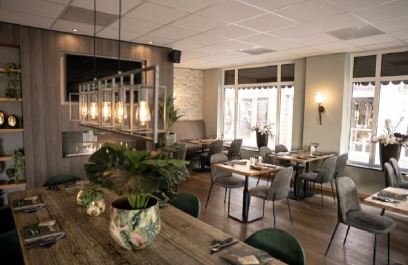
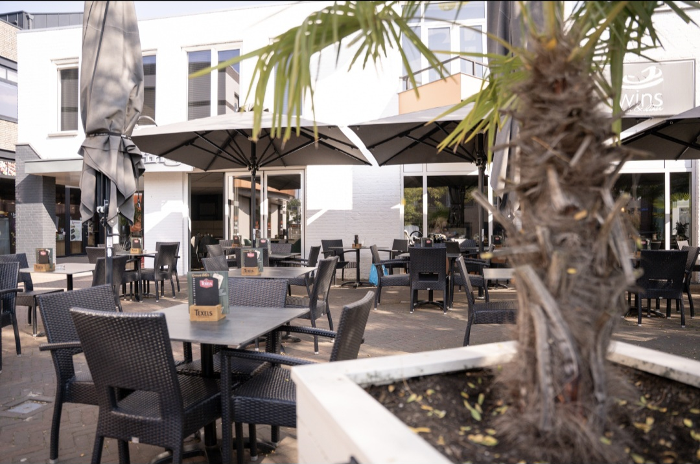
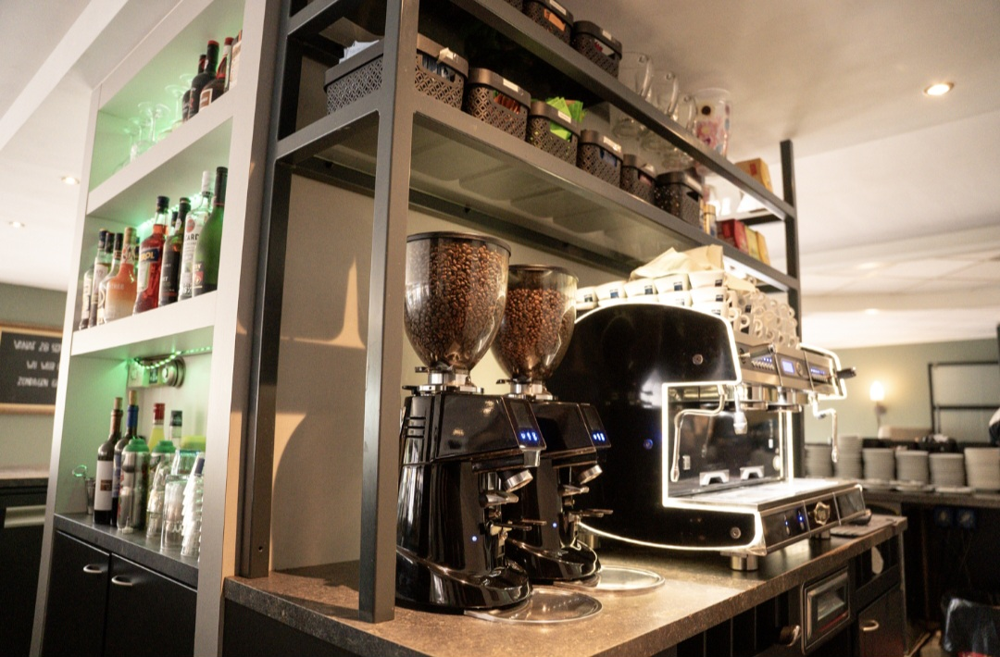
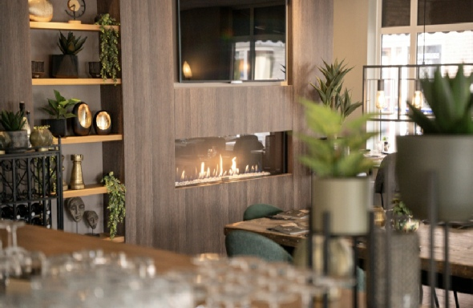
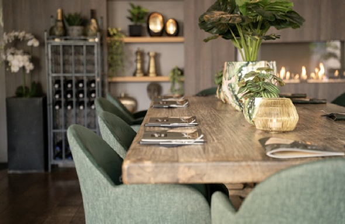
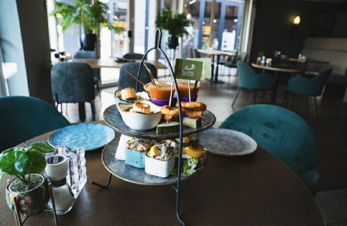
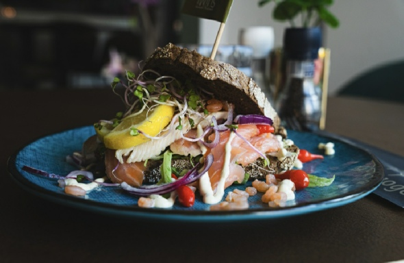
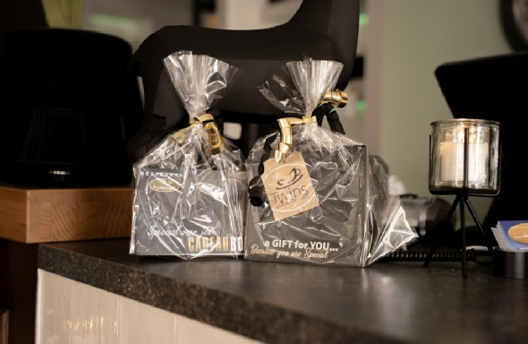

Twinslunch & diner
In hartje Boxmeer, al sinds 1997. Voor een lunch of diner, een kopje koffie tijdens het winkelen of een drankje op het terras.
- Sinds 1997 een begrip in Boxmeer
- 75 plaatsen binnen, 50 op het terras
- Gratis parkeren vlakbij
- Honden welkom, de drinkbakjes staan klaar
Lunchen, dineren of even zitten
Twins Lunch & Diner ligt midden in het centrum van Boxmeer. Gasten genieten hier van een heerlijke lunch of diner, een lekker kopje koffie tijdens het winkelen of relaxen op het terras met een lekker drankje.
Binnen zijn ongeveer 75 zitplaatsen. In de zomermaanden staat er een groot, gezellig terras met 50 plaatsen.
Mogen we u snel verwelkomen?




TapasBrunch op zondag
Elke zondag kunt u reserveren voor een TapasBrunch, tussen 12:00 en 12:30 uur. Hij duurt 2,5 uur.
- Soep naar keuze uit 2 soepen van de dag, met stokbrood, kruidenboter en huisgemaakte rouille.
- Kleine koude en warme gerechten op etagères en in bakjes: diverse broodjes, wisselende vlees- en visgerechten en frites.
- Kleine zoete lekkernijen om af te sluiten.
Koffie, thee, water en jus d'orange zijn inbegrepen.
- Volwassenen
- € 34,50 p.p.
- Kinderen 4 t/m 11 jaar
- € 17,50 p.p.
- Kinderen t/m 3 jaar
- gratis
Reserveer minimaal 1 dag van tevoren, vanaf 4 personen (tot ongeveer 30 personen). Op koopzondagen is de TapasBrunch niet mogelijk. In de zomermaanden zijn we op zondag gesloten.
Reserveer de TapasBrunchThuis genieten van Twins
Ook thuis kunt u genieten van de gerechten van Twins. Ze worden met liefde bereid en zorgvuldig ingepakt. U kiest uit alle gerechten van de menukaart. Afhalen kan tijdens de openingstijden.
Bestellen: 0485 57 87 04Zo bestelt u
Geef uw bestelling telefonisch door en vermeld duidelijk:
- uw naam
- uw telefoonnummer
- uw gewenste afhaaltijd
- uw bestelling


Verras iemand met een cadeaubon
Iemand trakteren op koffie met gebak, een lunch of een diner bij Twins? Vraag ons naar de cadeaubon: bel (0485) 57 87 04 of mail info@twinslunchendiner.nl.
Openingstijden
Afwijkende dagen en tijden
Reserveren
- We nemen alleen telefonische reserveringen aan, voor binnen in ons restaurant.
- Tafels op het terras reserveren we niet.
- Uw tafel wordt vergeven als u niet binnen 15 minuten na de reserveringstijd aanwezig bent.
Kom je bij ons werken?
Is werken in de horeca wat voor jou, zoek je werk in een leuk team en kun je aanpakken? Dan hebben we misschien een leuke job voor jou, met mooie werktijden.
Het team bestaat uit ongeveer 20 à 25 mensen van verschillende leeftijden, die werken op beide locaties. Na het werk doen we graag samen een drankje of een leuke activiteit.
Twins Lunch & Diner, Boxmeer
- Afwashulpen (vanaf 15 jaar)
- Bedieningsmedewerkers (doordeweeks en in het weekend)
Mail info@twinslunchendiner.nl of bel (0485) 57 87 04.
Restaurant De Watervogel, Maashees
- Afwashulpen (vanaf 15 jaar)
- Bedieningsmedewerkers (doordeweeks en in het weekend)
Het onlangs gerenoveerde restaurant aan de Maas: 60 plaatsen in de serre, een zaal voor ongeveer 80 gasten voor feesten en partijen, en buiten plek voor zeker 120 gasten. Mail info@dewatervogel.nl.
Contact en route
Twins Lunch & DinerHoogkoorpassage 27
5831 DM Boxmeer
(0485) 57 87 04
info@twinslunchendiner.nl
Facebook: twinslunchendiner
Voldoende gratis parkeerplaatsen in de buurt.